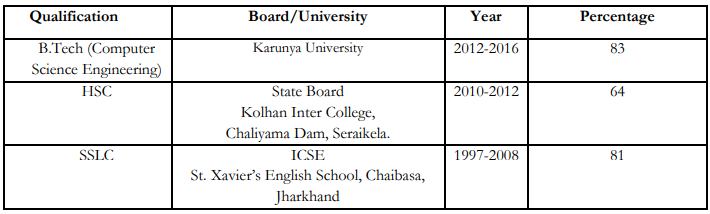

Who I am ?

CAREER OBJECTIVE
To work in a firm with a professional work driven environment where I can utilize and apply my
knowledge, skills which would enable me as a fresh graduate to grow while fulfilling organizational
goals.
BASIC ACADEMIC CREDENTIALS

IT PROFICIENCY
- Languages:C,C++,Java,C# .Net
- Operating System: Windows
- RDBMS:Oracle(SQL)
- Markup and Scripting:HTML
- Web Application: ASP .Net, Java Based Web Application(J2EE)
- Microsoft Office Excel, Microsoft Office Power Point
Other Tools: Microsoft Visual studio 2010, NetBeans, Eclipse, Oracle Enterprise Edition
EXPERIENCE
- Worked as a Registration Coordinator in Techagon ’15.
- Worked as Overall Technical Coordinator for Association of Computer Engineers Karunya
University 2015-16.
- Student Coordinator for Computer Society of India.
- Internship – Karunya University (Worked as a Software Developer and provided IT Services to
Covenant IT Group U.S from June 2015 to April 2016).
- Karunya University – Worked as Software Developer Full Time from May 2016 – March 2017.
- Worked as Senior Residence Advisor at Karunya University Residence from May-2016 to
March-2017.
- Covenant IT Solutions Pvt Ltd – Working as Software Developer and Head of Marketing from
April 2017 till present (Linked big brands like KFC, Pizza Hut and others to sale on
iCARTit.com).